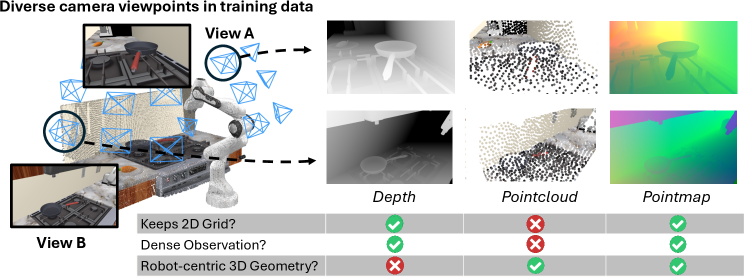
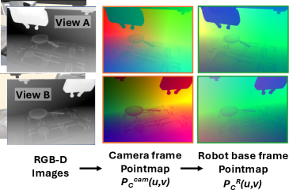

제출: 2026년 7월 13일 · 백본 π0.5 / SmolVLA · 실기 Franka Research 3 + RealSense
한 줄 요약 (TL;DR)
기존 VLA는 카메라 프레임의 관측 → 로봇 프레임의 액션이라는 좌표계 불일치로 카메라 세팅이 바뀔 때 일반화가 무너진다. Robot-centric pointmap — 각 픽셀에 end-effector 원점의 3D 좌표를 저장한 H×W 이미지 —을 도입하고, 같은 2D 백본을 재사용해 element-wise additive fusion으로 RGB에 얹는다. 아키텍처 변경 최소, RoboCasa에서 π0.5 55.3→62.9, SmolVLA 37.2→41.4, 실기 미지 카메라 뷰에서 55.0→66.7, RGB 대비 뷰포인트 변화 저하폭 −9.6pt vs 오직 −1.8pt.
1배경 · 문제의식
VLA는 시각 관측(H×W RGB)에서 로봇 액션을 예측한다. 그러나 액션은 로봇 좌표계에서 정의되는 반면 관측은 카메라 좌표계이므로, 카메라 위치/각도가 학습·배포 사이에 바뀌면 모델이 관측→액션 매핑을 새로 배워야 한다. 다양한 3D 접근(포인트클라우드 + Point Transformer, 카메라 파라미터 조건화 등)이 시도됐지만 2D 사전학습 이점을 잃거나 별도 3D 백본을 요구했다. 이 논문의 문제: "기존 2D VLA의 사전학습을 최대한 유지하면서, 뷰포인트 강건성을 어떻게 얻는가?"
2핵심 Contribution
Robot-centric pointmap 표현 — H×W 이미지 그리드 형태로 각 픽셀에 end-effector 원점 좌표의 3D 위치를 저장. 이미지-격자 구조를 그대로 유지해 2D 인코더 재사용 가능.
최소 아키텍처 수정 통합 — RGB 인코더를 복제한 pointmap 인코더가 별도 토큰 생성 없이 element-wise addition으로 RGB 특징에 병합. π0.5, SmolVLA 두 오픈 VLA에 동일 방식으로 삽입.
뷰포인트 강건성 대규모 검증 — RoboCasa 24환경 5카테고리에서 π0.5 +7.6pt·SmolVLA +4.2pt. 실기 미지 카메라에서 pointmap은 −1.8pt만 하락 vs RGB −9.6pt. KYC(카메라 조건)·PointVLA(3D 추가) 등 강한 3D baseline보다도 우위.
3Method
Pointmap 구성 (3단계)
Depth → 3D lift: 각 픽셀 (u,v)의 깊이 d와 카메라 내부 K로 카메라 프레임 3D 점 X_c = K⁻¹·(u,v,1)ᵀ·d 계산.
End-effector 재중심화: X^EE = X_base − p_ee (현재 EE 위치 뺌). "각 픽셀은 EE에서 본 3D 오프셋"이라는 액션-정렬 표현이 됨.
인코더 & 융합
Pointmap 인코더 g_φ는 RGB 인코더 f_θ와 동일 아키텍처, RGB 가중치로 초기화. 두 스트림의 토큰을 element-wise 합으로 병합:
z_c = f_θ(I_c) + g_φ(P^EE_c) — 이미지 격자 구조가 살아있어 (u,v) 대응이 유지되므로 덧셈만으로 RGB 특징을 3D 신호로 보강할 수 있다. 별도 3D 브랜치·추가 토큰 없음.
VLA 통합
π0.5(≈3B PaliGemma+expert)와 SmolVLA(≈2B) 둘 다에 pointmap 인코더만 추가하고 나머지 백본은 동일 사전학습 가중치 유지. Finetune 시 pointmap 인코더 + 원래 트랜스포머 함께 학습.
4실험 결과
RoboCasa (24환경, 성공률 %)
Method
평균
비고
π0.5 baseline
55.3
RGB only
π0.5 + Pointmap
62.9
+7.6pt, 5 카테고리 모두 향상
SmolVLA baseline
37.2
SmolVLA + Pointmap
41.4
+4.2pt
KYC (Know-Your-Camera)
59.1
카메라 파라미터 조건화
PointVLA
57.3
3D 증강 baseline
실기 (Franka Research 3, 4태스크 × 3카메라 = 180 데모)
조건
π0.5
π0.5 + Pointmap
DP3
Seen camera
73.3
78.3
63.3
Unseen camera
55.0
66.7
48.3
Δ (Seen−Unseen)
−18.3
−11.6
−15.0
Held-out 카메라 위치에서 pointmap의 우위가 확대 — "뷰포인트 강건성" 핵심 주장의 근거.
5Ablation
RQ1 — 사전계산 vs 학습된 변환
RGB only: 27.9%
RGB + Plücker rays + Depth(변환을 정책이 학습): 31.6%
RGB + Pointmap (사전계산 변환): 34.7% (+3.1pt vs 학습)
결론: 로봇-프레임 기하 정보를 미리 계산해 넣는 편이 정책이 스스로 좌표 변환을 학습하기를 기대하는 것보다 낫다.
RQ2 — Pointmap vs Point Cloud
RGB + Point cloud (MLP): 24.2
RGB + Point cloud (Point Transformer v3): 32.8
RGB + Pointmap (concat): 30.7
RGB + Pointmap (element-wise add): 34.7
이미지-격자 유지 + additive fusion이 가장 강력. 격자 없는 point cloud는 강한 3D 네트워크가 필요.
RQ3 — 좌표 원점 (Robot base vs EE)
Robot base 중심: 뷰변화 시 34.7 → 32.7 (−2.0pt)
End-effector 중심: 36.9 → 36.6 (−0.3pt)
EE 중심은 물체 절대 위치와 무관한 표현이 되어 훨씬 강건.
RQ4 — 뷰포인트 다양성 스케일링 (Figure 6)
변화 없음: RGB 34.5 vs +Pointmap 37.6
High 변화: RGB 24.9 vs +Pointmap 35.8
동일 폭 변화에서 RGB −9.6pt, Pointmap −1.8pt만 하락 — 강건성 격차의 정량 근거.
6핵심 Figure / Table

Figure 1 — 아이디어 개요. 서로 다른 카메라 뷰가 같은 장면을 관찰하지만, 로봇-프레임 pointmap은 뷰와 무관하게 같은 3D 좌표를 픽셀에 저장 — 관측-액션 매핑이 뷰 변화에 불변하도록 만든다. (출처: arXiv:2607.11498)

Figure 3 — Pointmap 파이프라인. RGB-D → 카메라 프레임 3D lift → T_cam→base로 base 프레임 변환 → EE 위치 빼서 EE 중심 재정렬. 결과는 H×W 이미지 형태로 유지되어 기존 2D 인코더에 그대로 투입. (출처: arXiv:2607.11498)
Figure 6 — 뷰포인트 다양성 스케일링. 학습 데이터의 카메라 뷰포인트 다양성이 증가할수록 RGB baseline은 급격히 저하되지만(−9.6pt), pointmap을 붙이면 저하가 −1.8pt에 그침. "카메라 세팅이 바뀌어도 정책이 안정"의 시각적 증거.